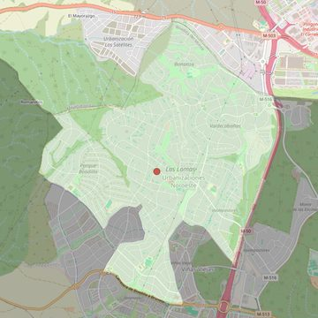

Santos Apóstoles
- Arciprestazgo
- Villaviciosa de Odón
- Población
- Boadilla del Monte
- Dirección postal
- c/ Valle del Roncal s/n - Urb. "Las Lomas"
- Código postal
- 28669
- Extensión
- 10,48 km² (1.048 ha)
- Teléfono
- 916 325 069
- Correo electrónico
- santosapostoles-boadilla@diocesisgetafe.es
- Información demográfica
- De la parroquia · De la población (Boadilla del Monte) · Del arciprestazgo (Villaviciosa de Odón)


Descargar mapaLímites según decreto
" NORTE: Término municipal de Majadahonda. NORESTE: Carretera de Boadilla a Majadahonda.
ESTE: Con la misma carretera de Boadilla a Majadahonda, los parajes El Encinar y Viñas Viejas, delimitados también por la calle Monte Segovia que, a su vez, es límite de la urbanización El Olivar de Miraval.
SUR: Con los parajes El Encinar y Viñas Viejas que delimitan, a su vez, las urbanizaciones Valdepastores y Las Lomas, y la carretera de Boadilla-Brunete, que es límite también de la urbanización El Olivar de Miraval.
"SUROESTE: Con la calle Río Guadarrama, que es límite, a su vez, con la urbanización Parque de Boadilla y del terreno que se describe en el apartado k) que denominaremos "Parte de Prado Grande".
OESTE: Con la finca que se conoce como Romanillos, la calle Monte Romanillos, por la que se accede a las urbanizaciones El Olivar de Miraval y Parque de Boadilla.
Asimismo la nueva parroquia incluye, en general, y saliendo del casco urbano en dirección Norte, todo el terreno comprendido entre las carreteras que van a Majadahonda y Brunete, exceptuando lo conocido como "Viñas Viejas" y "El Encinar" (que queda en la parroquia matriz);
y, en concreto, incluye: a) Urbanización Valdepastores. b) Urbanización Pino Centinela. c) Urbanización Monte de las Encinas. d) Parte del "Monte de Boadilla", a la izquierda de la carretera de Boadilla a Majadahonda, entre las urbanizaciones Valdepastores, Pino Centinela, Monte de las Encinas y Valdecabañas, incluido lo que se conoce como "Vedado de Fabra". e) Urbanización Valdecabañas. f) Urbanización Bonanza. g) Parte de terreno "en cuchillo" y sin urbanizar, entre las urbanizaciones Bonanza y Las Lomas, que se conoce como "Pinar de Romanillos". h) Urbanización Las Lomas. i) Parte de terreno, también sin urbanizar actualmente, comprendido entre las urbanizaciones Las Lomas y Parque de Boadilla y el "camino de acceso a Romanillos". j) Urbanización "Parque de Boadilla". k) Terreno actualmente sin urbanizar, comprendido entre las urbanizaciones El Olivar de Miraval, Las Lomas y Parque de Boadilla y la calle Río Guadarrama, al que denominamos "Parte de Prado Grande". l) Urbanización El Olivar de Miraval, a la izquierda de la carretera de Boadilla del Monte a Brunete" (Decreto de erección de 1-7-93)